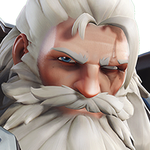

These are my favorite Overwatch Heroes that I enjoy playing and watching!
Click on the "Learn More" button to learn more about each hero!

D.Va
D.Va is a former professional gamer who now pilots a state-of-the-art mech in the Overwatch universe. She is known for her agility, defense matrix, and ultimate ability, Self-Destruct, which can clear entire areas of enemies.
Learn MoreMercy
Mercy is a support hero who excels at healing and resurrecting teammates. Her Caduceus Staff allows her to heal allies or boost their damage output, making her an essential part of any team composition.

Reaper
Reaper is a damage hero known for his close-range combat abilities and high burst damage. His Shadow Step allows him to teleport to strategic locations, while his ultimate ability, Death Blossom, can devastate enemies in his vicinity.

Genji
Genji is a highly mobile damage hero who excels at flanking and eliminating key targets. His Swift Strike allows him to dash through enemies, while his ultimate ability, Dragonblade, can turn the tide of battle in his favor.

Winston
Winston is a tank hero known for his mobility and disruptive abilities. His Jump Pack allows him to leap into the fray, while his Barrier Projector provides temporary cover for his team. His ultimate ability, Primal Rage, enhances his melee attacks and survivability.

Sombra
Sombra is a stealthy damage hero who excels at hacking and disrupting enemy abilities. Her Translocator allows her to teleport to strategic locations, while her ultimate ability, EMP, disables enemy shields and barriers.

Soldier: 76
Soldier: 76 is a versatile damage hero who excels at mid-range combat. His Biotic Field provides healing for himself and allies, while his ultimate ability, Tactical Visor, allows him to automatically target enemies for a short duration.

Tracer
Tracer is a highly mobile damage hero known for her speed and agility. Her Blink ability allows her to teleport short distances, while her ultimate ability, Pulse Bomb, can stick to enemies and deal significant damage.

Reinhardt
Reinhardt is a tank hero known for his large barrier shield and melee combat abilities. His Barrier Field provides protection for his team, while his ultimate ability, Earthshatter, can knock down enemies in front of him.

Ana
Ana is a support hero who excels at long-range healing and damage. Her Biotic Rifle allows her to heal allies or damage enemies from a distance, while her ultimate ability, Nano Boost, enhances an ally's damage output and survivability.

Bastion
Bastion is a damage hero known for his high firepower and versatility. His Configuration: Sentry mode allows him to transform into a stationary turret, while his ultimate ability, Self-Repair, enables him to heal himself over time.

Junkrat
Junkrat is a damage hero known for his explosive abilities and area denial. His Frag Launcher allows him to lob grenades that bounce and explode, while his ultimate ability, RIP-Tire, can devastate enemies in its path.